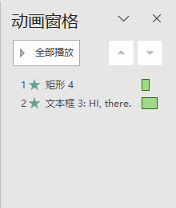
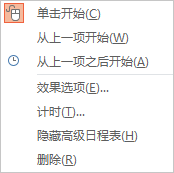
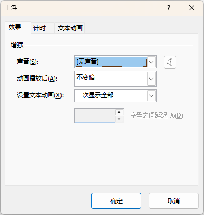
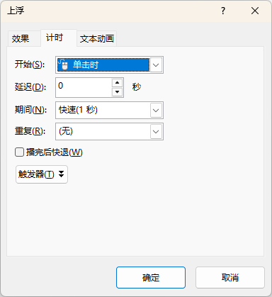
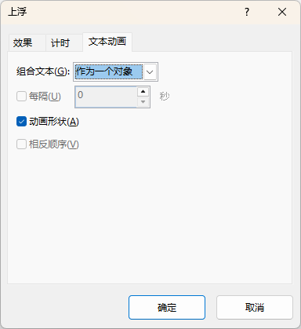

动画
Animations
- 内容 Contents
- 动画 Animation
- 高级动画 Advanced Animation
- 计时 Timing
动画 Animation
- 为幻灯片对象创建并指定动画类型
- 系统提供 4 种动画类型；不同的动画类型使用不同的颜色以示区分
1. 进入：对象第一次出现 | 进入 | 从无到有
2. 强调：对象已经出现
3. 退出：对象消失 | 离开 | 从有到无
4. 路径：对象按照指定路径完成动画
- 基本流程
- 1.选择对象
- 2.指定动画效果
- 3.设置动画具体效果
- 4.根据需要添加其他动画
- 5.预览动画
高级动画 Advanced Animation
- 设计动画参数
- 添加动画 Add Animation
- 为选择的对象添加动画
- 动画窗格 Animation Panel
- 展示当前幻灯片所有对象的动画
- 单击某个动画，可以设置详细参数
- 组合文本
作为一个对象
所有段落同时
按第一级段落：只强调第一级段落；第二级、第三级。。。当作一个分组
按第二级段落：只强调第一级、第二级段落；第三级、第四级。。。当作一个分组
按第三级段落：只强调第一级、第二级、第三级段落；第四级、第五级。。。当作一个分组
按第四级段落：依次类推
按第五级段落：依次类推
- 触发器 Trigger
- 动画遥控器或开关
- 实现交互：单击某个对象来触发动画的执行；如点击查看答案、交互式的导航菜单、点击展开的图表、简单的PPT小游戏
- 可以多次触发
- 如果希望一个动画受控后触发后续多个动画，应该统一为所有动画指定触发器，见后例
- 动画刷 Animation Painter
- 作用：将一个对象已经设计好的动画复制到另外一个对象
- 目的：提高开发效率
- 快捷键：Alt + Shift + C





计时 Timing
- 动画的时间设置
练习 Drill
- 插入汽车
- 绘制圆形，填充蓝色，无边框
- 添加动画：进入、基本缩放，2秒，从上一项开始，重复至下一次单击
- 添加动画：退出，淡化，2秒，从上一项开始，重复至下一次单击
- 复制3份刚才指定了动画的圆形，动画延迟分别为0.5、1.0、1.5
- 在动画窗格中，选择所有动画，统一指定触发器为：单击汽车
- 全选所有的圆形，调整宽高为扁平的椭圆，水平、垂直居中对齐
- 调整汽车：层级为顶层；位置，水平方向和圆形居中，垂直方向略高于圆形
- 播放动画，查看效果
- 阶段1：单击屏幕，对象从左侧陀螺转着飞入
- 进入动画：飞入；左侧2秒；同时
- 强调动画：陀螺转；2秒；同时
- 阶段2：单击屏幕，对象放大缩小
- 强调动画：放大缩小；自动翻转；重复2次
- 阶段3：单击屏幕，对象陀螺转着向右侧飞出
- 退出动画：飞入；右侧2秒；同时
- 强调动画：陀螺转；2秒；同时
- 文字渐变填充
- 脉冲动画；按字母顺序；重复
Bilibili
- 产品展示：点击汽车时，开始播放动画

走马灯
闪烁文字